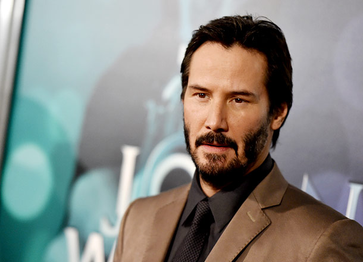
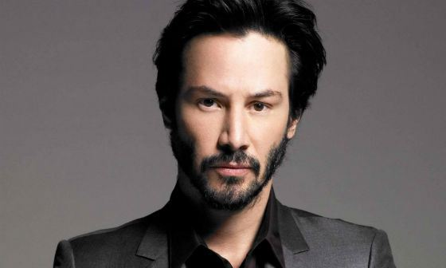
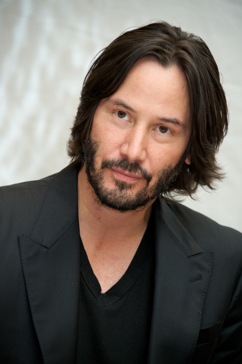

  
Киа́ну Чарльз Ривз (англ. Keanu Charles Reeves, [keɪˈɑːnuː]; род. 2 сентября 1964, Бейрут, Ливан) — канадо-американский актёр, кинопродюсер, кинорежиссёр и музыкант (бас-гитарист, бэк-вокалист). Наиболее известен своими ролями в таких кинокартинах, как «Матрица», «Джон Уик», «Скорость», «На гребне волны», «Адвокат дьявола», «Короли улиц», «Невероятные приключения Билла и Теда», «Константин: Повелитель тьмы», «Джонни-мнемоник». Ривз работал с такими известными кинорежиссёрами, как Стивен Фрирз («Опасные связи», 1988), Гас Ван Сент («Мой личный штат Айдахо», 1991), Фрэнсис Форд Коппола («Дракула», 1992) и Бернардо Бертолуччи («Маленький Будда», 1993). Ссылаясь на его игру в фильме «На гребне волны» (1991), критик газеты «The New York Times» Джанет Маслин хвалит актёрскую многосторонность Ривза, говоря, что он «проявляет значительную дисциплину и диапазон. Он легко перемещается между выдержанным поведением, подходящим для полицейско-процедурной истории, и гибкой манерой его комических ролей»[1]. 31 января 2005 года Киану Ривз получил звезду на Голливудской аллее славы.